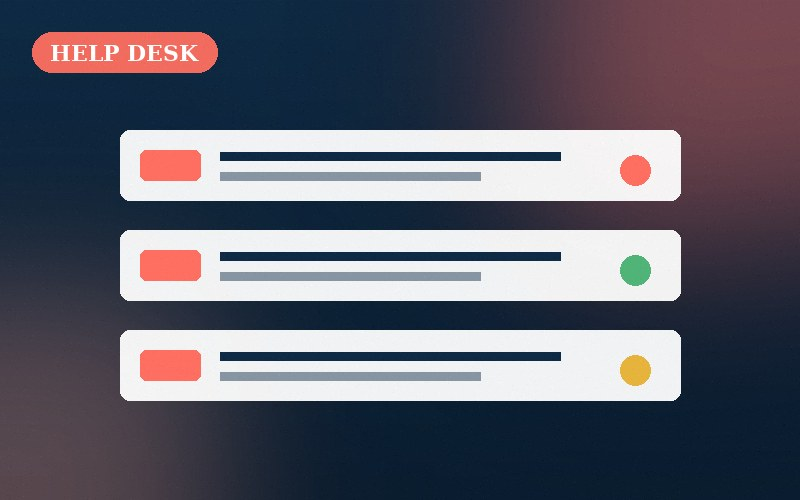
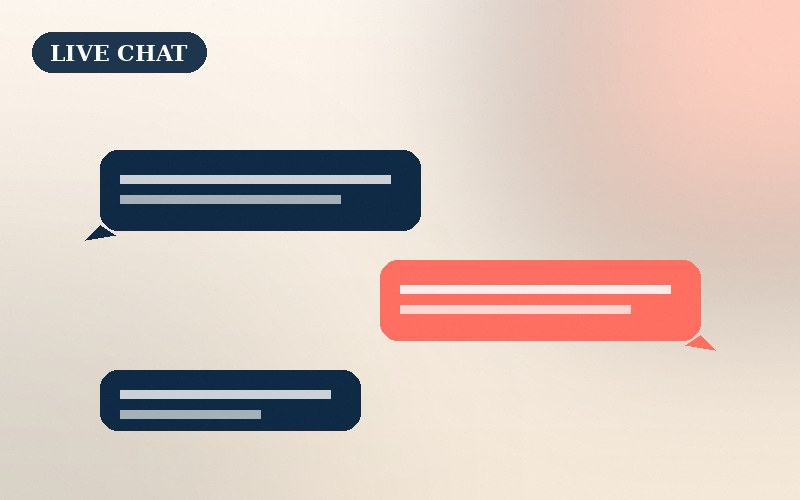
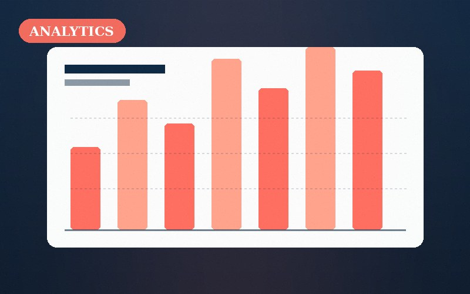
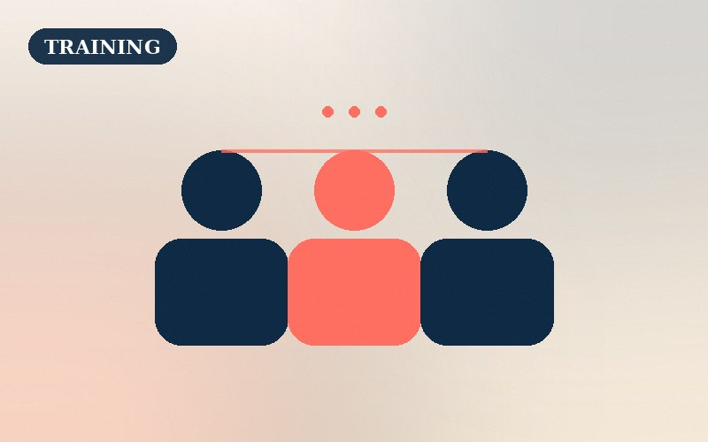
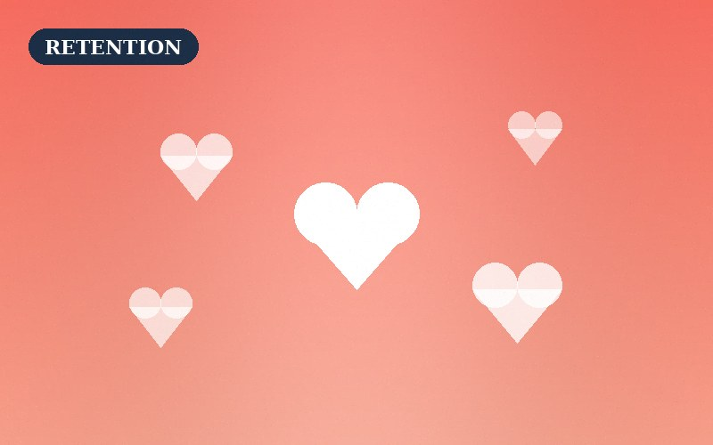
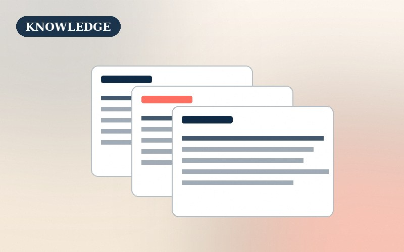

Help Desk Rebuild
Zendesk Overhaul for Northwind Retail
Redesigned the entire ticketing workflow, trained 8 agents, and wrote 120+ macros — cutting first-response time from 14 hours to under 2.
A selection of customer-experience projects I've led — from help-desk rebuilds to loyalty programs that actually moved the needle.

Redesigned the entire ticketing workflow, trained 8 agents, and wrote 120+ macros — cutting first-response time from 14 hours to under 2.

Scoped, implemented, and staffed a live-chat channel that became the #1 revenue driver during holiday peak — lifting conversion by 18%.

Built a live CX dashboard feeding Zendesk data into Google Sheets — giving leadership a weekly pulse on sentiment, trends, and coaching gaps.

Designed a 2-week self-paced onboarding program with Loom videos, quizzes, and shadow sessions — cutting ramp-up time from 6 weeks to 2.

Crafted a personal, hand-written outreach sequence for at-risk B2B accounts — recovering $210k in annual recurring revenue.

Wrote and structured 80+ articles for a SaaS help center — deflecting 34% of inbound tickets and earning a 4.8/5 helpfulness score.